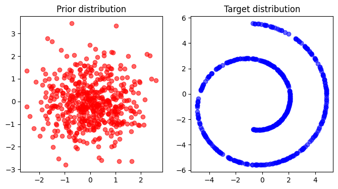
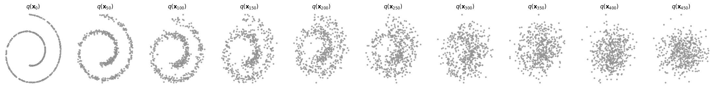
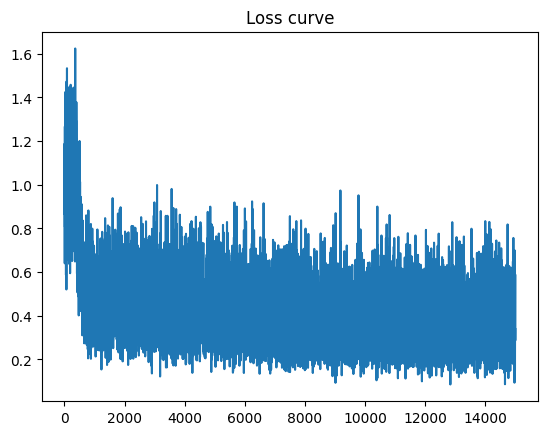

Code: Diffusion from Scratch#
# Required dependency
# ! pip install -q diffusers torch matplotlib scikit-learn
# %load_ext autoreload
# %autoreload 2
import torch
import torchvision
from torch import nn
from torch.nn import functional as F
from torch.utils.data import DataLoader
from diffusers import DDPMScheduler, UNet2DModel
from matplotlib import pyplot as plt
import sklearn as sk
import numpy as np
from typing import List
# from dataset import TwoDimDataClass, get_data_iterator
# import matplotlib.pyplot as plt
from ipywidgets import interact, IntSlider, Output
from IPython.display import display, clear_output
from PIL import Image
from tqdm import tqdm
import io
import math
device = torch.device("cuda" if torch.cuda.is_available() else "cpu")
print(f'Using device: {device}')
Dataset#
# For this experiment, 2D swiss roll dataset is used from scikit-learn
def normalize(ds, scaling_factor=1.0):
return (ds - ds.mean()) / ds.std() * scaling_factor
def load_2d_dataset(ds_type = 'swiss_roll', num_samples = 10000, dim=2, scale = 1.0):
if ds_type == 'swiss_roll':
X, _ = sk.datasets.make_swiss_roll( n_samples=num_samples, noise=0.0, random_state=None, hole=True)
X = normalize(X[:, [0, 2]], scaling_factor=scale)
if ds_type == 'gaussian_centered':
X = np.random.normal(size=(num_samples, dim))
return X
X_swiss = load_2d_dataset(ds_type = 'swiss_roll', num_samples = 10000, dim=2, scale = 3.0)
X_gaussian_centered = load_2d_dataset(ds_type = 'gaussian_centered', num_samples = 10000, dim=2)
# display dataset
import matplotlib.pyplot as plt
num_samples_vis = 500
fig = plt.figure(figsize=(8, 4))
ax = fig.add_subplot(1, 2, 1)
ax.scatter(X_gaussian_centered[:num_samples_vis, 0], X_gaussian_centered[:num_samples_vis, 1], alpha=0.6, color = 'r')
ax.grid(False)
ax.set_title("Prior distribution")
ax = fig.add_subplot(1, 2, 2)
ax.scatter(X_swiss[:num_samples_vis, 0], X_swiss[:num_samples_vis, 1], alpha=0.6, color = 'b')
ax.set_title("Target distribution")

Diffusion network#
class TimeEmbedding(nn.Module):
def __init__(self, hidden_size, embedding_size=256):
super().__init__()
self.mlp = nn.Sequential(
nn.Linear(embedding_size, hidden_size, bias=True),
nn.SiLU(),
nn.Linear(hidden_size, hidden_size, bias=True),
)
self.embedding_size = embedding_size
@staticmethod
def timestep_embedding(t, dim, max_period=10000):
"""
Create sinusoidal timestep embeddings.
Input:
t: a 1-D Tensor of N indices, one per batch element. These may be fractional.
dim: the dimension of the output.
max_period: controls the minimum frequency of the embeddings.
Output:
embedding: an (N, D) Tensor of positional embeddings.
"""
# https://github.com/openai/glide-text2im/blob/main/glide_text2im/nn.py
half = dim // 2
freqs = torch.exp(
-math.log(max_period)
* torch.arange(start=0, end=half, dtype=torch.float32)
/ half
).to(device=t.device)
args = t[:, None].float() * freqs[None]
embedding = torch.cat([torch.cos(args), torch.sin(args)], dim=-1)
if dim % 2:
embedding = torch.cat(
[embedding, torch.zeros_like(embedding[:, :1])], dim=-1
)
return embedding
def forward(self, t: torch.Tensor):
if t.ndim == 0:
t = t.unsqueeze(-1)
t_freq = self.timestep_embedding(t, self.embedding_size)
t_emb = self.mlp(t_freq)
return t_emb
class TimeLinear(nn.Module):
def __init__(self, dim_in: int, dim_out: int, num_timesteps: int):
super().__init__()
self.dim_in = dim_in
self.dim_out = dim_out
self.num_timesteps = num_timesteps
self.time_embedding = TimeEmbedding(dim_out)
self.fc = nn.Linear(dim_in, dim_out)
def forward(self, x: torch.Tensor, t: torch.Tensor):
x = self.fc(x)
alpha = self.time_embedding(t).view(-1, self.dim_out)
return alpha * x
# Simple MLP-based denoising network
class SimpleDenoiser(nn.Module):
def __init__(self, dim_in: int, dim_out: int, dim_hids: List[int], num_timesteps: int):
super().__init__()
"""
MLP-based a noise estimating network.
Args:
dim_in: dimension of input
dim_out: dimension of output
dim_hids: dimensions of hidden features
num_timesteps: number of timesteps
"""
layers= []
dims = [dim_in] + dim_hids + [dim_out]
for i in range(len(dims) - 1):
layers.append(TimeLinear(dims[i], dims[i+1], num_timesteps))
if i < len(dims) - 2:
layers.append(nn.ReLU())
self.layers = nn.Sequential(*layers)
def forward(self, x: torch.Tensor, t: torch.Tensor):
"""
Forward pass. This should output the noise prediction of the noisy input x at timestep t.
Args:
x: the noisy data after t period diffusion
t: the time that the forward diffusion has been running
"""
for layer in self.layers:
if isinstance(layer, nn.ReLU):
x = layer(x)
else:
x = layer(x,t)
return x
import numpy as np
import torch
import torch.nn as nn
import torch.nn.functional as F
def extract(input, t: torch.Tensor, x: torch.Tensor):
if t.ndim == 0:
t = t.unsqueeze(0)
shape = x.shape
t = t.long().to(input.device)
out = torch.gather(input, 0, t)
reshape = [t.shape[0]] + [1] * (len(shape) - 1)
return out.reshape(*reshape)
class BaseScheduler(nn.Module):
"""
Variance scheduler of DDPM.
"""
def __init__(
self,
num_train_timesteps: int,
beta_1: float = 1e-4,
beta_T: float = 0.02,
mode: str = "linear",
):
super().__init__()
self.num_train_timesteps = num_train_timesteps
self.timesteps = torch.from_numpy(
np.arange(0, self.num_train_timesteps)[::-1].copy().astype(np.int64)
)
if mode == "linear":
betas = torch.linspace(beta_1, beta_T, steps=num_train_timesteps)
elif mode == "quad":
betas = (
torch.linspace(beta_1**0.5, beta_T**0.5, num_train_timesteps) ** 2
)
else:
raise NotImplementedError(f"{mode} is not implemented.")
alphas = 1 - betas
alphas_cumprod = torch.cumprod(alphas, dim=0)
self.register_buffer("betas", betas)
self.register_buffer("alphas", alphas)
self.register_buffer("alphas_cumprod", alphas_cumprod)
class DiffusionModule(nn.Module):
"""
A high-level wrapper of DDPM and DDIM.
If you want to sample data based on the DDIM's reverse process, use `ddim_p_sample()` and `ddim_p_sample_loop()`.
"""
def __init__(self, network: nn.Module, var_scheduler: BaseScheduler):
super().__init__()
self.network = network
self.var_scheduler = var_scheduler
@property
def device(self):
return next(self.network.parameters()).device
@property
def image_resolution(self):
# For image diffusion model.
return getattr(self.network, "image_resolution", None)
def q_sample(self, x0, t, noise=None):
"""
sample x_t from q(x_t | x_0) of DDPM.
Input:
x0 (`torch.Tensor`): clean data to be mapped to timestep t in the forward process of DDPM.
t (`torch.Tensor`): timestep
noise (`torch.Tensor`, optional): random Gaussian noise. if None, randomly sample Gaussian noise in the function.
Output:
xt (`torch.Tensor`): noisy samples
"""
if noise is None:
noise = torch.randn_like(x0)
alphas_prod_t = extract(self.var_scheduler.alphas_cumprod, t, x0)
xt = torch.sqrt(alphas_prod_t) * x0 + torch.sqrt(1 - alphas_prod_t) * noise
return xt
@torch.no_grad()
def p_sample(self, xt, t):
"""
One step denoising function of DDPM: x_t -> x_{t-1}.
Input:
xt (`torch.Tensor`): samples at arbitrary timestep t.
t (`torch.Tensor`): current timestep in a reverse process.
Ouptut:
x_t_prev (`torch.Tensor`): one step denoised sample. (= x_{t-1})
"""
# compute x_t_prev.
if isinstance(t, int):
t = torch.tensor([t]).to(self.device)
eps_factor = (1 - extract(self.var_scheduler.alphas, t, xt)) / (1 - extract(self.var_scheduler.alphas_cumprod, t, xt)).sqrt()
eps_theta = self.network(xt, t)
mu = (1/extract(self.var_scheduler.alphas, t, xt).sqrt()) * (xt - eps_factor * eps_theta)
if t>0:
sigma = ( ((1 - extract(self.var_scheduler.alphas_cumprod, t-1, xt))/ (1 - extract(self.var_scheduler.alphas_cumprod, t, xt)))* (1-extract(self.var_scheduler.alphas, t, xt))).sqrt()
x_t_prev = mu + torch.randn_like(mu) * sigma
else:
x_t_prev = mu
return x_t_prev
@torch.no_grad()
def p_sample_loop(self, shape):
"""
The loop of the reverse process of DDPM.
Input:
shape (`Tuple`): The shape of output. e.g., (num particles, 2)
Output:
x0_pred (`torch.Tensor`): The final denoised output through the DDPM reverse process.
"""
# sample x0 based on Algorithm 2 of DDPM paper.
x0_pred = torch.randn(shape).to(self.device)
for t in range(self.var_scheduler.num_train_timesteps-1,0,-1):
x0_pred = self.p_sample(x0_pred,t)
return x0_pred
def compute_loss(self, x0):
"""
The simplified noise matching loss corresponding Equation 14 in DDPM paper.
Input:
x0 (`torch.Tensor`): clean data
Output:
loss: the computed loss to be backpropagated.
"""
# compute noise matching loss.
batch_size = x0.shape[0]
t = (torch.randint(0, self.var_scheduler.num_train_timesteps, size=(batch_size,)).to(x0.device).long())
eps = torch.randn_like(x0)
x_q = self.q_sample(x0, t, noise = eps)
eps_theta = self.network(x_q, t)
loss = F.mse_loss(eps_theta, eps)
return loss
def save(self, file_path):
hparams = {
"network": self.network,
"var_scheduler": self.var_scheduler,
}
state_dict = self.state_dict()
dic = {"hparams": hparams, "state_dict": state_dict}
torch.save(dic, file_path)
def load(self, file_path):
dic = torch.load(file_path, map_location="cpu")
hparams = dic["hparams"]
state_dict = dic["state_dict"]
self.network = hparams["network"]
self.var_scheduler = hparams["var_scheduler"]
self.load_state_dict(state_dict)
# hyperparameters #
config = {
"num_diffusion_steps": 1000,
"dim_hids": [128, 128, 128, 128, 128, 128],
"lr": 1e-4,
"batch_size": 32,
"num_train_iters": 15000,
"device": device,
}
def build_ddpm(config):
network = SimpleDenoiser(dim_in=2,
dim_out=2,
dim_hids=config["dim_hids"],
num_timesteps=config["num_diffusion_steps"]
)
var_scheduler = BaseScheduler(config["num_diffusion_steps"])
ddpm = DiffusionModule(network, var_scheduler).to(config["device"])
return ddpm
ddpm = build_ddpm(config)
fig, axs = plt.subplots(1, 10, figsize=(28, 3))
tg_ds = torch.tensor(X_swiss).float()
for i, t in enumerate(range(0, 500, 50)):
x_t = ddpm.q_sample(tg_ds[:num_samples_vis].to(device), (torch.ones(num_samples_vis) * t).to(device))
x_t = x_t.cpu()
axs[i].scatter(x_t[:,0], x_t[:,1], color='white',edgecolor='gray', s=5)
axs[i].set_axis_off()
axs[i].set_title('$q(\mathbf{x}_{'+str(t)+'})$')

Training#
def figure2image(fig):
buf = io.BytesIO()
fig.savefig(buf)
buf.seek(0)
img = Image.open(buf)
return img
def get_data_iterator(iterable):
iterator = iterable.__iter__()
while True:
try:
yield iterator.__next__()
except StopIteration:
iterator = iterable.__iter__()
# Initialize the model.
ddpm = build_ddpm(config)
target_ds = torch.tensor(X_swiss).float()
# pbar = tqdm(range(config["num_train_iters"]))
optimizer = torch.optim.Adam(ddpm.parameters(), lr=config["lr"])
train_dl = torch.utils.data.DataLoader(target_ds, batch_size=config["batch_size"], pin_memory=True,)
train_iter = get_data_iterator(train_dl)
losses = []
images = []
for epoch in range(config["num_train_iters"]):
optimizer.zero_grad()
batch_x = next(train_iter)
batch_x = batch_x.to(device)
loss = ddpm.compute_loss(batch_x)
loss.backward()
optimizer.step()
losses.append(loss.item())
# display the final sampling
print(f"loss: {losses[-1]:.4f}")
with torch.no_grad():
x0 = ddpm.p_sample_loop(shape=(num_samples_vis, 2)).cpu()
fig, ax = plt.subplots(1,1)
ax.scatter(x0[:,0], x0[:,1])
ax.set_title(f"Samples at {step}-iteration")
clear_output(wait=True)
plt.show()
img = figure2image(fig)
images.append(img)
plt.plot(losses)
plt.title("Loss curve")

